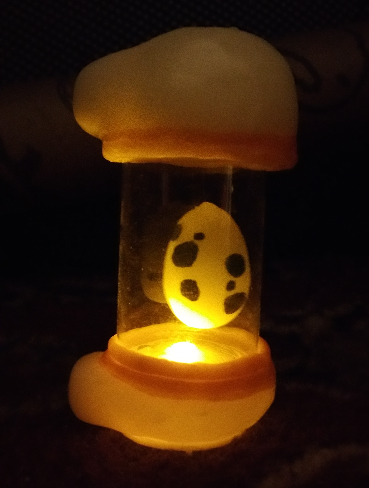

This was made as a present over a year ago, and used the same material as the previous project. It is based off an item in the app Pokemon Go called an Egg Incubator, like the image below.
The bases I used for this project were a tea light LED candle and a small clear bottle. I used the app as reference since you can spin the incubator around to see all the sides. For the bottom I molded an Instamorph base that the candle could slip into, and dyed some Instamorph orange by melding some orange acrylic into it.
Once both pieces were attached I shaped the orange pice around the bottom of the bottle. I molded the top part in a similar way around the cover of the bottle. The egg was also made of Instamorph and was suspended from the cover using a very thin fishing line.
Once assembled and painted it all fit together perfectly and the warm LED really added a nice touch to the piece.
